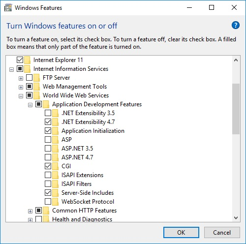

Welcome to a hopefully very brief tutorial! This tutorial will guide you through setting up a server on Windows with
IIS (Internet Information Services). The reason for this is because, you're going to need a web server to run all of my CGI
examples... along with my webpages. First, start the run dialog by pressing Windows+R. Then type, "control" without quotes.
Press 'Return' key, or click on the button labeled, "Ok". After control panel comes up then navigate to Program and Features or if
you are on old-style control panel view. Double-click on the, "Add remove programs". Then, on the left menu bar you should see
a link that says, "Turn Windows features on or off". Click on that, when it comes up scroll through the list to find IIS (Internet
Information Services). Tick the check box next to that, then go inside of that by clicking on the plus sign to expand it. Once
in there then, Make sure you go to "World Wide Web Services". Then, "Application Development Features" and choose CGI.

Next, you need to run inetmgr.exe (so open run dialog again Windows+R). Type, "inetmgr.exe" without quotes and press 'Return'. Now
comes the configuration part of the process. Double-click your web server when it comes up on the left bar. Then click on, "Default Web Site"
under Sites. Once that's done, make sure you select, "Handler Mappings". Right-click in the main panel in the center should have OptionsVERBHandler
stuff like that. Well anyways, when you right-click in there (on the CGI-exe module handler). Then, edit permissions. Allow to execute CGI programs.
Then, click on "Application Pools". On the right-hand pane, click "Recycle".
Finally, close that application and then open your browser navigate to "http://localhost/". Without the quotation marks though. That should be
all you need to do, hooray you've got a web server on Windows.